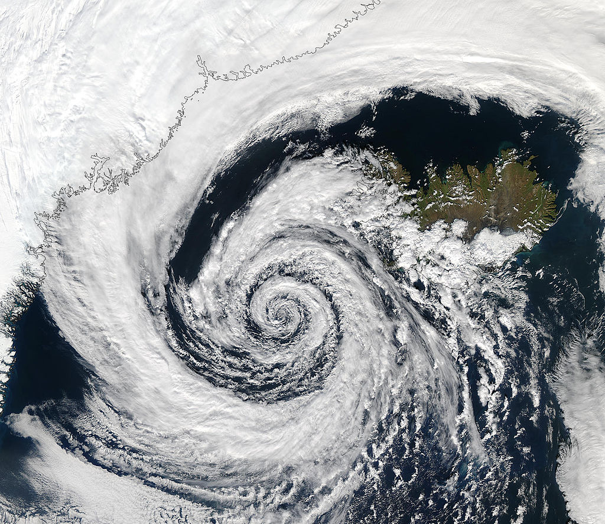

Циклоны на других планетах .

Циклоны в атмосфере Сатурна. Фотография зонда Кассини.
Циклоны возникают не только в атмосфере Земли, но и в атмосферах других планет. Например, в атмосфере Юпитера уже несколько веков существует так называемое Большое Красное Пятно, которое является, по всей видимости, долгоживущим антициклоном (иногда ошибочно приводится в качестве циклона). Циклоном, в свою очередь, являлось Малое Тёмное Пятно в атмосфере Нептуна. Однако циклоны в атмосферах других планет изучены недостаточно.
Логотип Викисловаря В Викисловаре есть статья «циклон»
Депрессия
Внетропический циклон
Субтропический циклон
Тропический циклон (ураган, тайфун)
Список тропических циклонов
Глаз бури
Спираль
Антициклон
Геострофический ветер
Барический закон ветра
Литература
Погосян Х. П. Циклоны. — Л.: Гидрометеоиздат, 1976. — 148 с. — 51 000 экз.
[показать]⛭
солнце Погода дождь.
Движение воздуха (пунктирные стрелки) и изобары (непрерывные линии) в циклоне в северном полушарии
Стадия заполнения (окклюзии) внетропического циклона
Поперечный разрез тропического циклона. Линией сверху обозначена Тропопауза, снижающаяся над центром циклона.
Воздух в циклонах циркулирует против часовой стрелки в Северном полушарии и по часовой стрелке в Южном. В пограничном слое атмосферы действие внутреннего трения приводит к появлению у вектора скорости ветра слагаемого, направленного к центру циклона, против направления барического градиента (в сторону убывания давления). Величина силы трения уменьшается с высотой, что приводит к повороту ветра.
Схематическое изображение процесса образования циклонов (чёрные стрелки) из-за вращения Земли (синие стрелки)
Циклон — не просто противоположность антициклону, у них различается механизм возникновения. Циклоны постоянно и естественным образом появляются из-за вращения Земли. Следствием теоремы Брауэра о неподвижной точке является наличие в атмосфере как минимум одного циклона или антициклона.
Различают два основных вида циклонов — внетропические и тропические. Первые образуются в умеренных или полярных широтах и имеют диаметр от тысячи километров в начале развития, и до нескольких тысяч в случае так называемого центрального циклона.
Среди внетропических циклонов выделяют южные циклоны, образующиеся на южной границе умеренных широт (средиземноморские, балканские, черноморские, южнокаспийские и т. д.) и смещающиеся на север и северо-восток. Южные циклоны обладают колоссальными запасами энергии; именно с южными циклонами в средней полосе России и СНГ связаны наиболее сильные осадки, ветры, грозы, шквалы и другие явления погоды.
Тропические циклоны образуются в тропических широтах и имеют меньшие размеры (сотни, редко — более тысячи километров), но бо́льшие барические градиенты и скорости ветра, доходящие до буревых. Для таких циклонов свойственен также т. н. «глаз бури» — центральная область диаметром 20—30 км с относительно ясной и безветренной погодой. Тропические циклоны могут в ходе своего развития превращаться во внетропические.
Ниже 8—10° северной и южной широты циклоны возникают очень редко, а в непосредственной близости от экватора — не возникают вообще.Воздух в циклонах циркулирует против часовой стрелки в Северном полушарии и по часовой стрелке в Южном. В пограничном слое атмосферы действие внутреннего трения приводит к появлению у вектора скорости ветра слагаемого, направленного к центру циклона, против направления барического градиента (в сторону убывания давления). Величина силы трения уменьшается с высотой, что приводит к повороту ветра.
Схематическое изображение процесса образования циклонов (чёрные стрелки) из-за вращения Земли (синие стрелки)
Циклон — не просто противоположность антициклону, у них различается механизм возникновения. Циклоны постоянно и естественным образом появляются из-за вращения Земли. Следствием теоремы Брауэра о неподвижной точке является наличие в атмосфере как минимум одного циклона или антициклона.
Различают два основных вида циклонов — внетропические и тропические. Первые образуются в умеренных или полярных широтах и имеют диаметр от тысячи километров в начале развития, и до нескольких тысяч в случае так называемого центрального циклона.
Воздушные вихри с вращательным движением воздуха в северном полушарии против часовой стрелки, в южном — по часовой стрелке называются циклонами. Размеры циклонов изменяются в очень широких пределах — от 100 до 1700 м.миль, над океанами их размеры бывают и больше. Обычно средний диаметр циклона 600 м. миль. Наиболее обширные и глубокие циклоны над океанами наблюдаются на севере Атлантического океана, в районе Девисова пролива, Исландии и на севере Великобритании, а на севере Тихого океана — в районе Камчатка — Аляска. В южном полушарии циклоны наблюдаются вокруг Антарктиды в зоне 55 и 65° ю. ш.
Давление в центре циклона (глубина циклона) зависит от стадии его развития и изменяется от 1010 до 970 мбар, более низкое давление во внетропических циклонах встречается редко.
Ветер в циклоне у поверхности океана дует в направлении против движения часовой стрелки (в южном полушарии, по часовой стрелке), отклоняясь от изобары в сторону низкого давления в среднем на 10—15°.
Градиент давления от центра циклона к его периферии сначала возрастает, а затем начинает убывать. Наибольшие барические градиенты чаще наблюдаются в передней и тыловой частях циклона, обычно в южном и западном квадрантах. В соответствии с этим скорость ветра в циклоне меняется в широких пределах. В самом центре циклона ветер слабый, нередко здесь наблюдается штиль. Во внутренней части циклона, особенно в южной и западной четвертях, ветер наиболее сильный. К периферии скорость его ослабевает.
Температура воздуха в циклоне зависит от стадии его развития: в начальной стадии температура воздуха в северной половине циклона ниже, чем в южной, так как через централь- ную его часть в этой стадии развития проходит фронт, разделяющий холодную массу воздуха от теплой.
По мере развития циклона холодный воздух вытесняет теплый из южной половины циклона, и в конце своего развития в стадии окклюдирования холодный воздух занимает всю область циклона. Обычно с циклоном связана пасмурная, дождливая погода.
Перемещение циклонов чаще всего, особенно над океанами, происходит с юго-запада и запада на северо-восток и восток. Перемещение циклонов с севера на юг и с юга на север над океанами наблюдается значительно реже. Аномальное движение циклонов с востока на запад встречается очень редко. Повторяемость циклонов зависит от времени года и географического района. В среднем над океанами повторяемость циклонов зимой больше, чем летом, но эти сезонные различия невелики. На рис. 21 показаны основные пути циклонов.Структура рабочего цикла включает время рабочего периода и время перерывов. Длительность ПЦ:Тц=Тт+Тпз+Те+Тк+Ттр+Тмо+Тпр где: Тт -время технических операций; Тпз -подготовительно заключительный период; Те -процесс; Тк -контрольные операции; Ттр -время транспортировки; Тмо -межоперационные промежутки; Тпр -время перерывов.